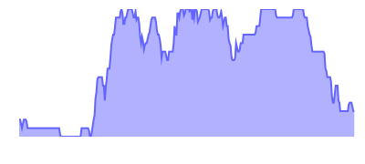

Un outil qui permet d'analyser et monitorer en temps réel la distribution des vélos en libre-service de la ville de Nantes.
... vélos disponibles
... stations ouvertes

À propos
Cet application web a été créé en utilisant 2 jeux de données Open data, les photographies aériennes de la Loire-Atlantique et l'API Bicloo.
Développé par Pablo Seminario.